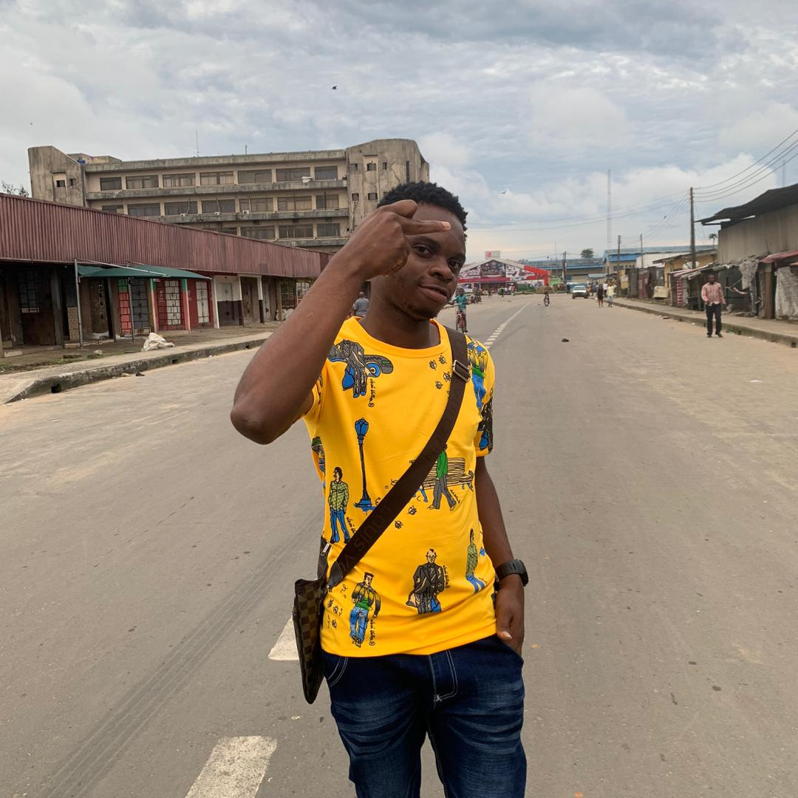

Chidi Kingsley
Chidi kingsley is the fisrt founder and CEO of afriairways.
it was first established in the year 2002,after his graduation
from the fedral university of aviation makurdi,he originally
worked as the managing director of Ebo trans company ikeja before
he relocated to abuja where he established this organisation

Daniel Ngoka
mr Daniel Ngoka a shareholder to afriairways ltd, an indigene of
delta state,3 times award winner of international travelling agencies
highly skilled in airplane navigation and control,once the director
of Nnamdi azikiwe airport..